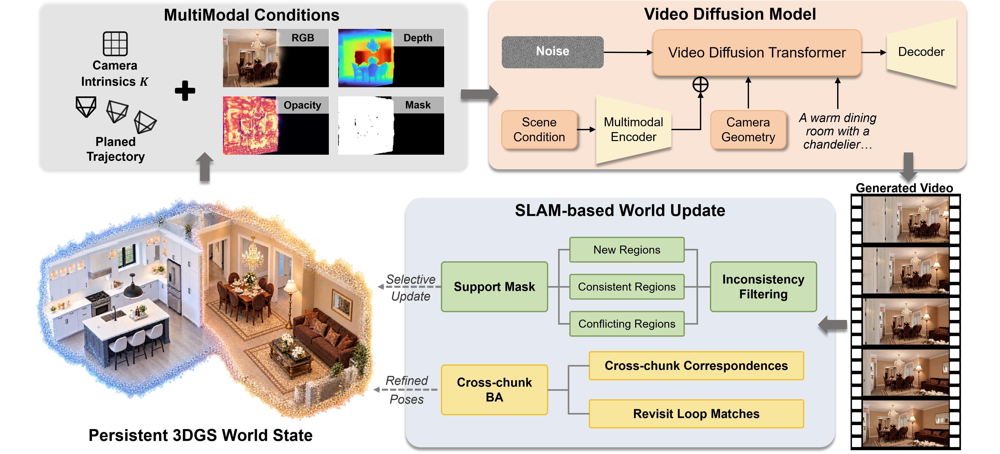
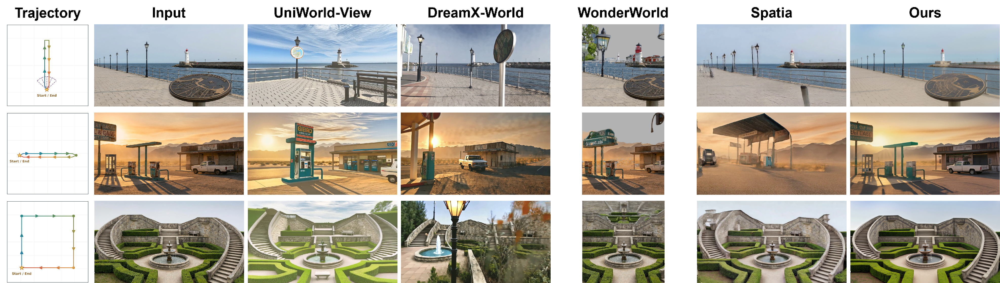

Problem Setup
01 · A Persistent World State for Interactive Generation
GSExplorer 研究的是交互式世界生成：给定当前场景、相机轨迹和文字提示，系统持续生成可探索的视频，同时在离开又返回时保持空间和外观一致。作者把问题拆成两个循环：短时的 condition-driven video generation，以及长期的 persistent 3D Gaussian world update。
输入包括当前 3DGS 状态的渲染、目标相机几何和文本提示；输出是新视频块以及被选择性写回的 3DGS 世界状态。这个设定与 LingBot-Map 的 RGB 流式重建不同，但它提供了一个清楚的 memory 闭环：世界状态不是只读缓存，而是下一次生成的条件，并接受新证据的更新。
Method
02 · Multimodal Conditions and Relative Ray Encoding
每一步从当前 Gaussian scene 沿计划相机轨迹渲染 degraded RGB、depth、accumulated opacity 和 hole mask。RGB 提供外观，depth 提供几何，opacity 告诉生成器哪些位置已有覆盖，hole mask 暴露未观察区域。相机几何不与这些图像简单拼接，而是通过 Relative Ray Encoding（RRE）单独注入视频生成器。
这样做的直觉是把“场景里有什么”和“目标相机从哪里看”分开编码。生成器根据多模态场景条件完成局部视频；生成结果随后送入 SLAM-based 3DGS backend。论文还构造 293K degraded-condition/target pairs：从真实数据的场景状态渲染 49 个 SLAM 估计的目标姿态，再用 ECC registration 过滤错位样本。
Mechanism
03 · Persistent Update: Filter, Align, Integrate

Sicheng Yu et al. · Original figure, unmodified · arXiv HTML · arXiv license · Paper & Caption ↗
Figure 1 的关键不是视频生成器本身，而是生成结果如何写回世界状态。对每个生成帧 I_i，系统在估计相机位姿下渲染旧 Gaussian 场景 I_old，并在已有覆盖区域计算像素差 e_i(u)=1/3||I_i(u)-I_old(u)||_1。覆盖区域内的一致性分数为 c_i(u)=exp(-λe_i(u))，未覆盖区域默认没有冲突。最终 support mask S_i=V_i·1[c_i≥τ_c]。
support mask 将像素分成三类：新可见区域可以扩展场景，一致区域可以细化已有 Gaussians，冲突区域被排除，避免一次错误生成污染旧地图。论文附录还会把拒绝区域向 7×7 邻域扩张，并把 mask 用在 RGB、SSIM 和 inverse-depth 优化上。
Geometry
04 · Cross-Chunk Bundle Adjustment
生成块之间仍可能有相机漂移或重访错位，因此 backend 保留跨块和重访约束 E，并用 robust loss ρ 最小化对应残差 r_ij。优化得到的相机状态再传给 Gaussian reconstruction，使新帧和历史帧在同一世界坐标下更新。它解决的是跨 chunk 的空间对齐，和 consistency filtering 解决的内容冲突是两件事。
这也是它与普通“把新视频继续 splat 到场景里”方案的差别：写入前先判断内容是否与当前世界一致，写入后再用跨块约束调整几何。若生成模型在未覆盖区域产生新内容，系统允许扩展；若它改写了已有区域，则需要有足够证据才接受。
Experiments
05 · Training and Evidence

Sicheng Yu et al. · Original figure, unmodified · arXiv HTML · arXiv license · Paper & Caption ↗
视频生成器使用 293K 训练对，WorldScore 上评估 single-step 与 three-step extrapolation，指标包括 Camera Control、Object Control、Content Alignment、3D Consistency、Photometric Consistency、Style Consistency 和 Subjective Quality。长时一致性从 R2M-Bench 选 50 个 leave-and-return case，每个 rollout 为 10 steps、481 frames，回到初始视角后用 PSNR、SSIM、LPIPS 和 Match Ratio 比较。
作者报告 single-step average 82.85，Camera Control 99.07；three-step average 71.56。481-frame revisit 的 PSNR/SSIM/LPIPS/Match Ratio 为 19.85/0.623/0.369/0.481。去掉 inconsistency filtering 后 three-step average 从 71.56 降到 65.14，revisit PSNR/Match Ratio 从 19.85/0.481 降到 17.15/0.378；去掉 bundle adjustment 后为 68.91、17.41 和 0.406。数字说明两种写回控制都重要，但仍是生成与重建系统的联合结果，不等于纯流式重建的几何提升。
Discussion
06 · Relation to Semantic-Guided LingBot-Map
对 LingBot-Map，GSExplorer 最直接的启发是把 memory write 变成受证据门控的更新：先从当前语义/几何状态渲染或预测历史证据，再判断新观测是互补、重复还是冲突。若对象语义相同但深度边界冲突，应像 GSExplorer 一样保留冲突掩码和置信度，而不是把两个区域平均融合。
但不能直接把生成世界的过滤规则当作重建模型的创新。GSExplorer 的新视频来自 diffusion generator，冲突可以用旧渲染与新帧的外观差衡量；LingBot-Map 面对真实 RGB 流，语义错误、遮挡和动态物体会改变证据质量。迁移实验应固定容量，比较无语义、只用几何一致性和语义+几何门控三组，并分别报告完整度、深度误差、边界质量、漂移和延迟。
Discussion
Reading Questions
Why is a persistent Gaussian state useful for generation?
它能把已探索区域渲染成下一步的空间条件，避免每个生成块只依赖短时视频上下文。
What prevents generated errors from corrupting the map?
先用旧场景渲染与新视频比较，形成 consistency support mask；冲突区域不参与 Gaussian 初始化和优化。
Why are filtering and bundle adjustment separate?
前者决定哪些像素有资格写入，后者在接受的证据之间优化跨块相机与几何对齐，分别控制内容冲突和空间漂移。
What can transfer to LingBot-Map?
把语义和几何作为写入前证据，区分互补、重复、冲突观测，并让不确定证据暂存或拒写；不能直接迁移生成视频的数值。
References
First submitted 2026-11-01. Read 2611.01543v1 on 18 November 2026. Two original figures are reproduced from the arXiv HTML under the paper's stated arXiv license. Experimental results are reported by the authors and have not been independently reproduced.
Verified on 2026-11-18. Paper results refer to the linked versions. Repository references were checked on this date.